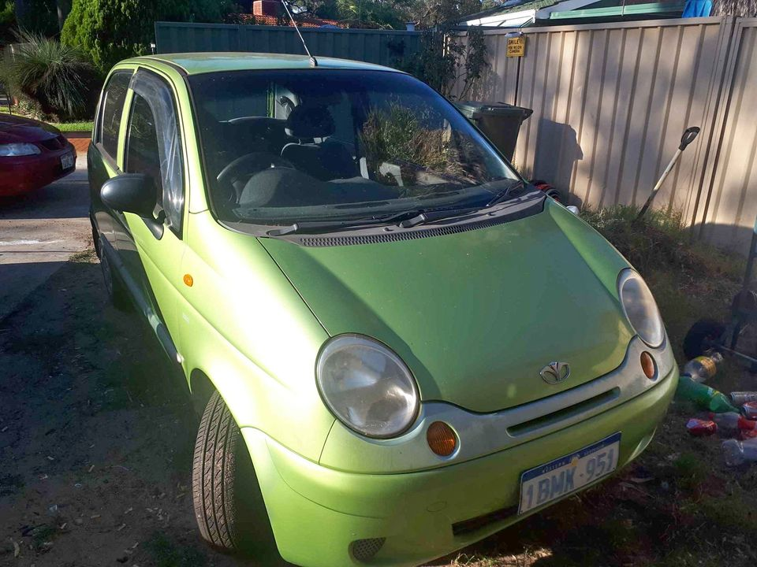

After buying cars, we process them in our Daewoo wrecking yard. Our experts carefully take our good parts and sell them at a pretty low price. Daewoo car wreckers can deliver parts Australia wide. In Melbourne, we can ship them on the same day. So, we are fast and quick in handling Daewoo spare parts. Daewoo is also one of the leading Korean car manufacturers. They produce quality cars and 4wds. Due to that facet, we have a huge stock of Daewoo parts.
First of all, you should make sure about which parts you are buying. Before you buy any part, take a thorough look at its condition. We have an extensive inventory of all spare parts you can buy. For example, we have the spare parts for the air conditioner. Daewoo Parts List Make sure that you get only the genuine spare parts for Daewoo cars. You must ensure that the part is genuine and in good condition. You can buy the parts from our Daewoo wrecking yard. If you have a Daewoo car, you can save time in dealing with Daewoo parts. We buy parts for a Daewoo car from Australia. We can ship the parts to you by Australia Post. We can help you save on shipping charges. We also provide other cheap car parts to you. Get the top quality Daewoo car parts today!

A basic starter motor is one of our most popular parts. It is the first thing to be replaced when your car is having technical trouble. We ship it worldwide in the minimum possible time. Daewoo clutch and pedal kits It takes months to get a replacement for these parts. And so, when you have the required stock of them, we deliver it to you at the best price. The free shipping service is another one of our greatest advantages. So, why wait? Order them today.
We provide a variety of vehicle breakdown parts from all over the country. So, we can get a reliable support from their equipment. If you need car repair and removal services in Perth, we have the best Daewoo replacement parts and repair Melbourne. We can help you get your car back in shape. Daewoo Car Related Items If you need a car wash, we can help you. We have been providing our services since 2013. On top of that, we also offer Daewoo car wash services in Geeveston, Western Australia. Daewoo Brake Parts We also sell Daewoo brake pad upgrade Melbourne. If you need them, we are the best choice.
We have the parts which we are proud to sell in Australia. We promise you that you will not regret making the purchase. We will get you the parts at the best price in the country. We ensure to deliver the parts in the manner in which you expect them. We are highly customer-oriented and we take pride in that. We deliver the parts to our customers on time. Some of the Daewoo parts we sell in Australia are An aftermarket exhaust manifold Satellite radio Exhaust Headlight Fan Hood Brake fluid level indicators Stall valves Coolant inlet air intake Junction box Stereo Tires and wheel bearings Axle repair and maintenance Underbody Wheel bearing We buy all parts at the lowest price possible.
At our wrecking yard, we guarantee our customers that their cars will be restored. As we have a huge stock of Daewoo car parts, we can instantly handle Daewoo-related car repairs.
Address:103 Sheffield Rd, Welshpool WA 6106
Phone: (08) 9358 1392